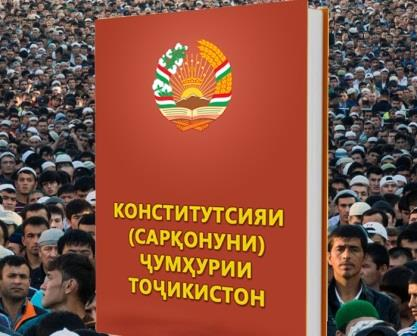
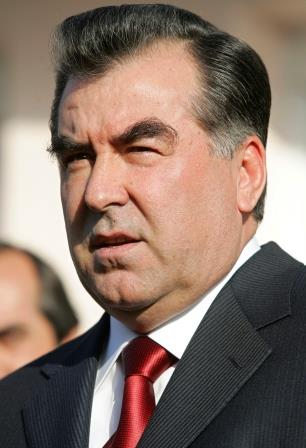

| HOME | HISTORY | PEOPLE | CULTURE | CITIES | GALLERY | AUTHORS |
Tajikistan, officially the Republic of Tajikistan, is a mountainous, landlocked country in Central Asia with an estimated 8 million people in 2013, and an area of 143,100 km2. It is bordered by Afghanistan to the south, Uzbekistan to the west, Kyrgyzstan to the north, and China to the east. Pakistan lies to the south, separated by the narrow Wakhan Corridor. Traditional homelands of Tajik people included present-day Tajikistan, Afghanistan and Uzbekistan. The territory that now constitutes Tajikistan was previously home to several ancient cultures, including the city of Sarazm of the Neolithic and the Bronze Age, and was later home to kingdoms ruled by people of different faiths and cultures, including the Oxus civilisation, Andronovo culture, Buddhism, Nestorian Christianity, Zoroastrianism, Manichaeism and Islam. The area has been ruled by numerous empires and dynasties, including the Achaemenid Empire, Sasanian Empire, Hephthalite Empire, Samanid Empire, Mongol Empire, Timurid dynasty, the Russian Empire, and subsequently the Soviet Union, upon whose dissolution in 1991 Tajikistan became an independent nation. A civil war was fought almost immediately after independence, lasting from 1992 to 1997. Since the end of the war, newly established political stability and foreign aid have allowed the country's economy to grow. Tajikistan is a presidential republic consisting of four provinces. Most of Tajikistan's 8 million people belong to the Tajik ethnic group, who speak Tajik (a dialect of Persian). Many Tajiks also speak Russian as their second language. The Gorno-Badakhshan Oblast of Tajikistan despite its sparse population is home to incredible linguistic diversity where Rushani, Shughni, Ishkashimi, Wakhi and Tajik number among the languages spoken. Mountains cover more than 90% of the country. It has a transition economy that is highly dependent on remittances, aluminium and cotton production.
Flag |
Gerb |
 Constitution |
 President |
National anthem |
Tajikistan means the "Land of the Tajiks". The suffix "-stan" is Persian for "place of or "country" and Tajik is, most likely, the name of a pre-Islamic (before the seventh century A.D.) tribe. According to the Library of Congress's 1997 Country Study of Tajikistan, it is difficult to definitively state the origins of the word "Tajik" because the term is "embroiled in twentieth-century political disputes about whether Turkic or Iranian peoples were the original inhabitants of Central Asia."